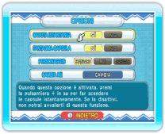

Qui puoi modificare le impostazioni di gioco. Premi  verso l’alto o verso il basso per selezionare un’opzione e premi a destra o a sinistra per modificarne il valore. Per modificare il tuo Mii, seleziona l’opzione e premi
verso l’alto o verso il basso per selezionare un’opzione e premi a destra o a sinistra per modificarne il valore. Per modificare il tuo Mii, seleziona l’opzione e premi  per accedere allo schermo di selezione del Mii.
per accedere allo schermo di selezione del Mii.